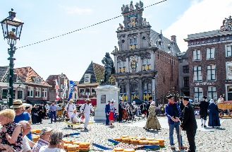
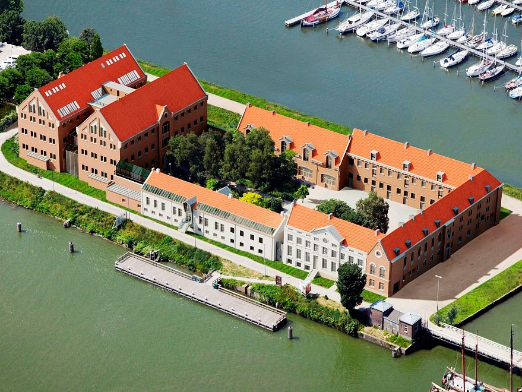

 De Hoornse kaasmarkt wordt gehouden op het belangrijkste plein van de stad, de Roode Steen. Sinds 1888 ook wel Kaasmarkt genoemd. De Hoornse kaasmarkt is daarmee de oudste kaasmarkt van Nederland, met een geschiedenis die iedere bezoeker aan Hoorn moet proeven. Letterlijk en figuurlijk. Zonder een bezoek aan de kaasmarkt, is uw bezoek aan Hoorn niet compleet. Zelden komt geschiedenis zo dichtbij!
 Het Museum van de 20e Eeuw is een museum in de stad Hoorn, in de Nederlandse provincie Noord-Holland. In het museum worden interieurs en (gebruiks)voorwerpen uit de periode 1900 tot circa 1980 getoond, variërend van speelgoed, huiskamers, keukeninrichtingen, klaslokaal, kantoorapparatuur tot beeld- en geluidsapparatuur. Ook worden er gemiddeld vier wisseltentoonstellingen over uiteenlopende onderwerpen per jaar getoond. Het museum opende de deuren in april 1994.